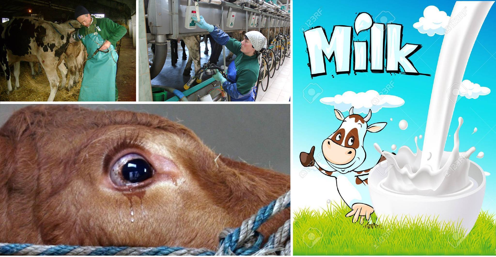
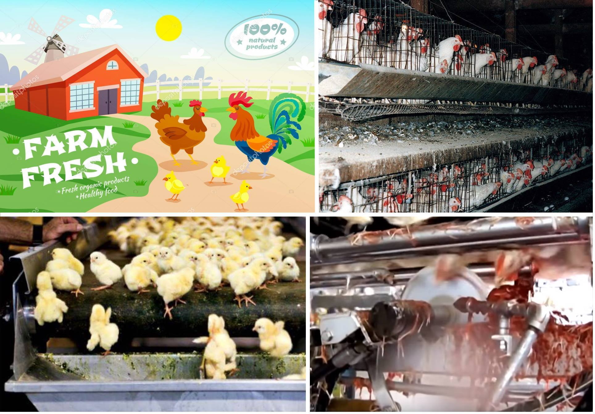
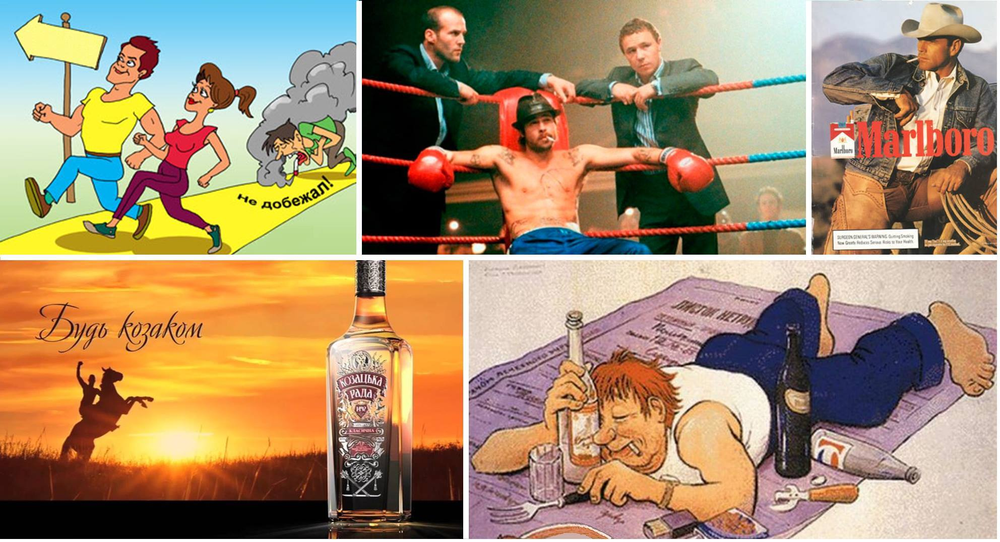

Животноводческая индустрия немало тратится на рекламу с приданием «позитивного образа» себя, дабы стимулировать потребителя потреблять и что бы потребитель воспринимал это в «положительном» свете, как нечто «естественное» и «само собой разумеющееся».
Такая работа маркетологов касается всей животноводческой отрасли. Попытка сформировать положительную обратную связь с потребителем - важная часть бизнес-стратегии любого коммерческого проекта.
Пример с курицами:
Если рассматривать вопрос таких манипуляций шире, то ими так же занимаются алкогольная и табачная промышленность. В попытках сформировать положительную связь образов алкоголика и курильщика, с образами якобы «успешного», «сильного», «популярного» человека и вообще какого-то там «героя» и ««супермена»».
Реальный же вид своих клиентов, алкогольная и табачная промышленность в своей рекламе не показывает.
